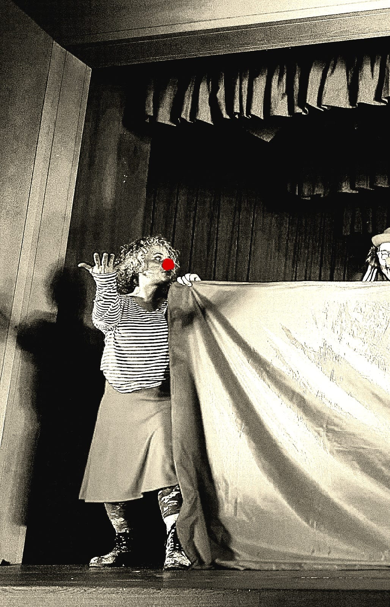
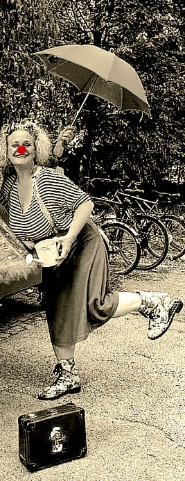
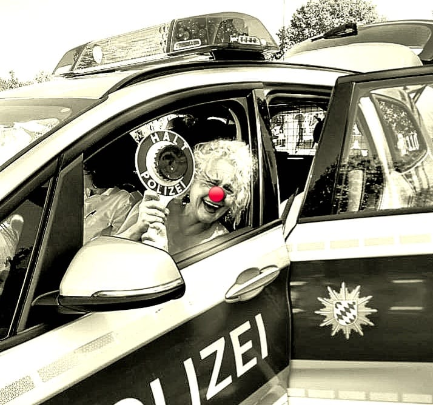

Bunt, humorvoll und herrlich unvorhersehbar!
Mit meinen Clown-Auftritten bringe ich frischen Wind, herzhaftes Lachen und unvergessliche Momente auf deine Veranstaltung. Ob als interaktiver Walkact direkt unter den Gästen oder als charmantes Show-Highlight auf der Bühne – die rote Nase öffnet die Herzen des Publikums im Sturm. Perfekt für alle, die ihrem Event eine Prise Leichtigkeit und Poesie schenken wollen.

Einsatzbereiche & Formate
Jedes Event ist einzigartig, deshalb passen sich meine Figuren flexibel dem Rahmen an. Vom charmanten Empfang der Gäste über spielerische Slapstick-Einlagen bis hin zu maßgeschneiderten Walkacts – die Performance lebt vom Moment und der Interaktion mit den Menschen vor Ort.

Unsere Philosophie
Ein Clown scheitert nicht – er feiert das Scheitern! Auf der Bühne und im Spiel geht es nicht um Perfektion, sondern um echte, ehrliche Emotionen. Es ist die Kunst, dem Publikum im richtigen Augenblick ein Lächeln ins Gesicht zu zaubern und den Alltag für einen Moment komplett zu vergessen.

Du suchst das passende Highlight für dein Event?
Lass uns gemeinsam herausfinden, welches Show-Format am besten zu deinen Gästen passt!